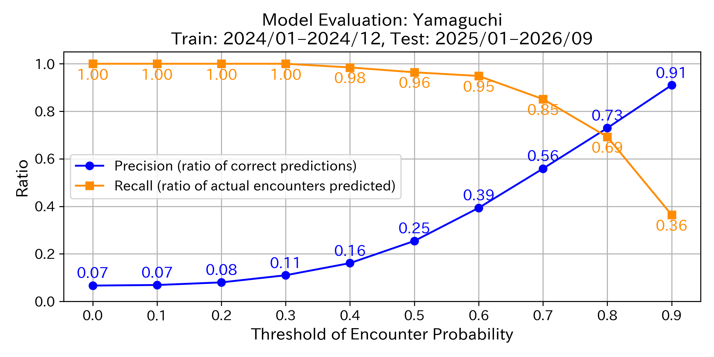
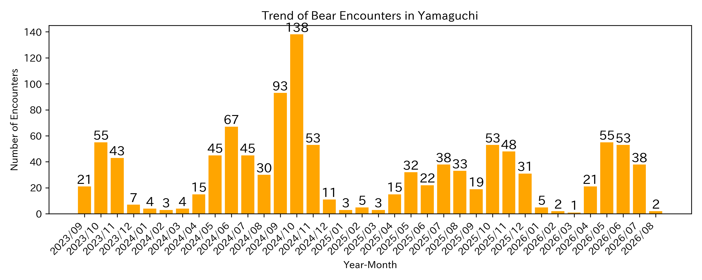

This map uses an AI model developed by the Fukazawa Laboratory at Sophia University
to predict bear encounter probabilities across Yamaguchi based on local data.
Note (Important): The information on this map predicts potential future encounters and is not definitive. The content is provided solely for awareness purposes.
The information on this map is for reference only. Please always check the official announcements from the relevant municipalities and authorities for the most accurate and up-to-date information.
This data is based on sightings reported by each municipality. Some reports may involve misidentification with other animals. Therefore, please understand that the predictions on the map may include the possibility of encountering animals other than bears.
This map is created based on locations where encounters with humans have been recorded. Therefore, it may differ from the actual distribution or movement of bears. In particular, predictions are not made in remote mountainous areas where people do not enter, but bears may still appear, so please exercise caution.
The "X" on the map indicates locations where animals believed to be bears were recently encountered.
The gradient markers from red to yellow indicate the probability of encountering a bear estimated by AI. The closer to red, the higher the encounter risk.
Markers do not indicate pinpoint locations but represent the encounter probability in the surrounding area. Each marker is placed at the center of a 1 km² mesh.
Areas without markers are excluded from predictions due to insufficient data. No encounter predictions are provided for these locations.
Rivers with a high likelihood of encounters are overlaid in red.
Which color markers should I be most cautious about?
To avoid missing areas where bear encounters are likely to occur, we recommend exercising caution not only around “High” areas but also around markers labeled as “Moderately High” or, in some municipalities, “Possible.”
Please refer to the next question for a detailed explanation.
Of course, even in areas labeled as “Low,” it does not mean that encounters will never happen.
Always prioritize and check the latest information provided by your local government.
How accurate is this prediction map?
Even if a marker is yellow or light in color, it does not guarantee that bears will not appear there. Likewise, a red marker does not mean a 100% chance of an encounter.
The accuracy of the AI-based bear encounter prediction model is measured using two key metrics: precision and recall.
Precision indicates the proportion of correctly predicted bear encounter locations among all locations predicted as “bear encounter.”
For example, if there are 300 markers labeled “Very High” on the map and actual encounters occurred at 150 of those locations, the precision would be 150 ÷ 300 = 0.5 (50%).
Recall represents the proportion of correctly predicted encounters among all actual encounter locations.
For instance, if there were 200 actual encounter points (marked with X), and 150 of them were predicted as “Very High,” the recall would be 150 ÷ 200 = 0.75 (75%).
The encounter probability is expressed as a value between 0 and 1:
“Very High” = 0.8–1.0, “High” = 0.6–0.8, “Moderately High” = 0.4–0.6, “Possible” = 0.2–0.4, and “Low” = 0.0–0.2.
As shown in the graph below, focusing only on the “Very High” range (around 0.8 on the graph) increases precision but decreases recall (more missed encounters).
To minimize missed encounters, we recommend being cautious even in areas with “Moderately High” (around 0.4) or, depending on the municipality, “Possible” (around 0.2) risk levels.
Again, even areas labeled “Low” do not guarantee zero risk. Always check the latest updates from your local government first.

How much have bear encounters increased?
This graph shows the number of encounters with animals believed to be bears in Yamaguchi over the past three years (monthly).

Technical References:
This map is based on the following publications: 1. Shin Nakamoto & Yusuke Fukazawa. “Bear warning: predicting encounters using temporal, environmental, and demographic features.” International Journal of Data Science and Analytics (2025): 1–19. Link 2. Shin Nakamoto & Yusuke Fukazawa. “Developing a bear encounter prediction model and analyzing feature importance in Akita Prefecture.” IPSJ National Convention, 2025. Link 3. Shin Nakamoto & Yusuke Fukazawa. “Predicting human injuries caused by bears using large language models.” JSAI Annual Conference, 2024. Link
Acknowledgments:
We used the following datasets and thank the organizations for providing them:
Extracted only latitude, longitude, and date-time information from the Yamaguchi Prefecture Open Data Catalog site (bear sighting information) for use (CC BY 4.0) (Yamaguchi): Link
River Data (Ministry of Land, Infrastructure, Transport and Tourism, Geospatial Information Authority of Japan): River Data
Unauthorized copying or redistribution of this map or its contents is prohibited.
For inquiries or permission requests, please contact: fukazawa [at] sophia.ac.jp